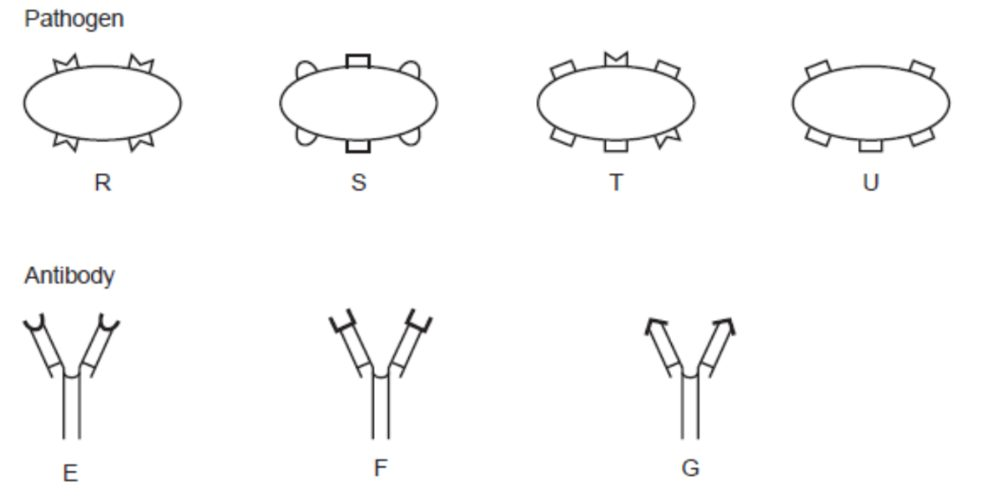
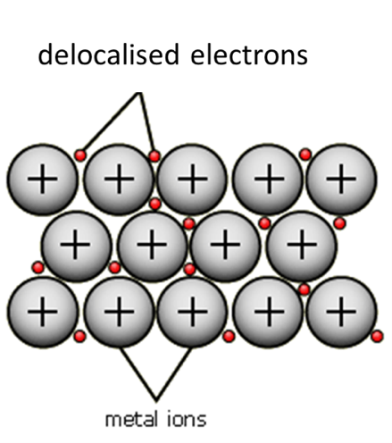
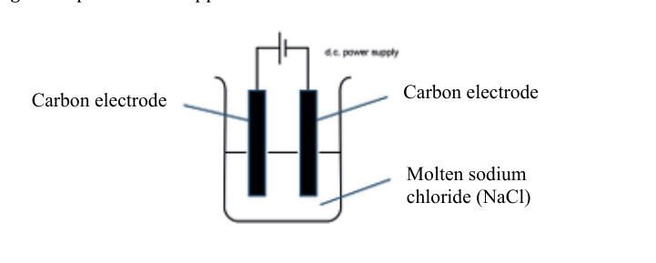
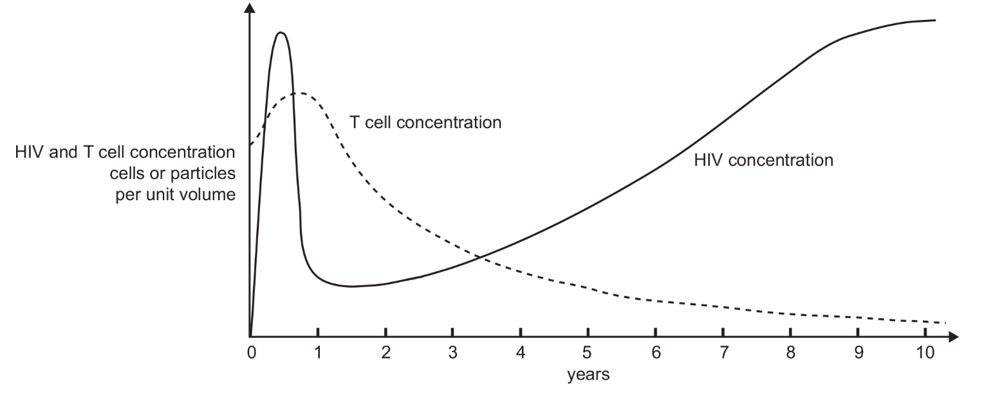
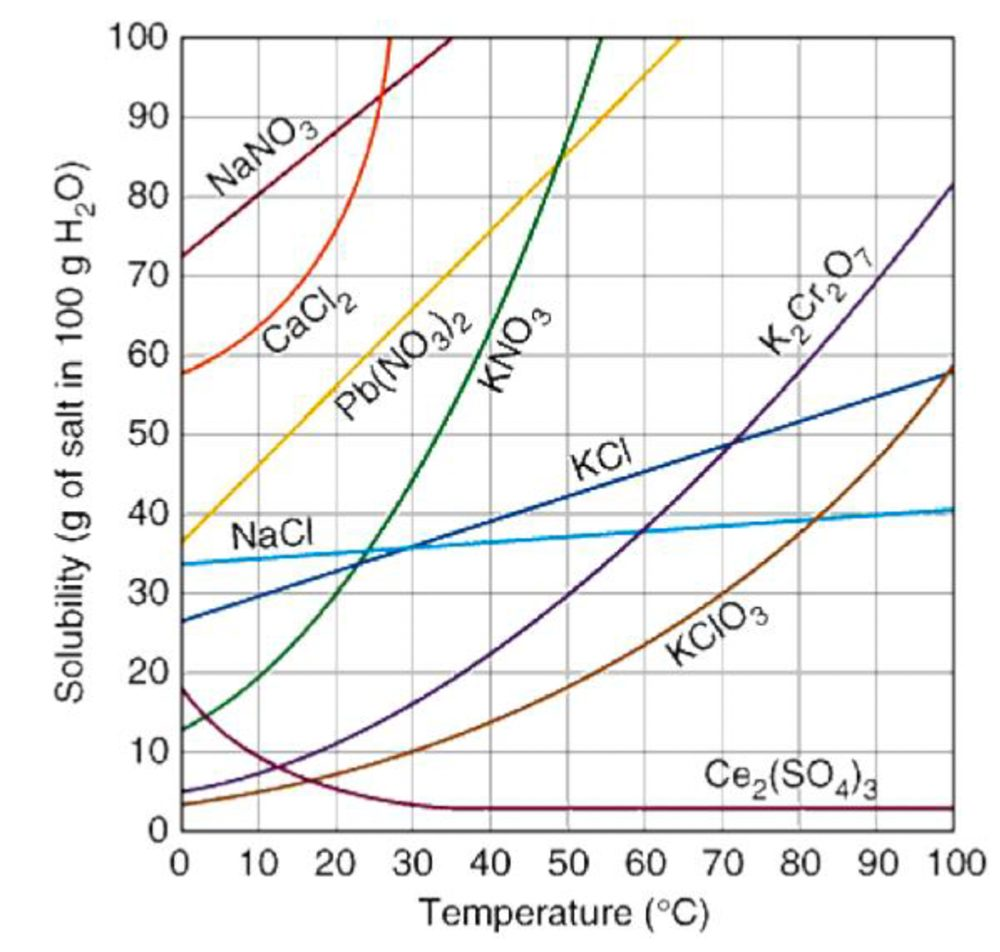

This exam covers Minerals to Metals, Immunology and Water Analysis.
Section A: Multiple choice (25 marks)
Minerals to Metals
Which property of metals is explained by the delocalised electrons in a metallic structure?
Why are metals malleable?
How do alloys differ structurally from pure metals?
Which of the following correctly describes the reactivity series of metals?
What are the products when magnesium reacts with hydrochloric acid?
In the electrolysis of copper sulfate solution using copper electrodes, what happens at the cathode?
Which of the following is an example of a redox reaction?
Potassium loses electrons (oxidised) and Mg2+ gains electrons (reduced): a displacement reaction.
Which of the following is the balanced chemical equation for zinc and sulfuric acid?
Immunology
The role of the helper T cell is to:
Inflammation is a vital process in the innate immune response, involving a cellular, a vascular and a resolution stage. It begins with the release of histamine. Histamine causes:
As part of the first line of defence, naturally occurring barriers to invading pathogens include:
An example of a non-specific response by the immune system is:
Which one of the following is true of prions?

Consider the diagram above of four pathogens and three antibodies. Which one of the following statements is correct?
When a person is bitten by a poisonous snake, they are given an injection of antivenom, which contains antibodies to that snake's venom. Following the injection, the person has:
Use the following information for Questions 16 and 17.
Ross River fever is caused by a virus that lives in kangaroos and wallabies. When a female mosquito bites an infected animal, it picks up virus particles. When the mosquito bites a human, the virus enters the bloodstream. The virus then reproduces in blood cells, causing fever, rashes and joint pain.
Using the information given, it can be concluded that:
The most effective way to reduce the incidence of Ross River fever in Australia would be to:
Bovine spongiform encephalopathy (BSE, or "mad cow disease") is a prion disease of cattle, caused by feeding cattle food that contains prions from other infected animals. Symptoms can take up to five years to appear. There are concerns that variant Creutzfeldt–Jakob disease (vCJD) in humans could be caused by eating infected beef. Yellow fever is a viral disease of humans, carried by a mosquito vector; symptoms appear three to six days after infection. Which combination of approaches would be most effective at controlling the risk of outbreaks of both vCJD and yellow fever?
Water Analysis
Which of the following substances is soluble in water?
A property of a base would be:
Which reaction statement is accurate?
Consider these four solutions: 1 LiCl, 2 Na2SO4, 3 Al(NO3)3, 4 Pb(NO3)2. Which two solutions can be mixed together to form a precipitate?
Pb2+ + 2Cl− → PbCl2(s). (Solutions 2 and 4 would also form a precipitate, PbSO4, but that pair isn't offered.)
Water is a polar molecule because
| Indicator | Colour at low pH | pH range | Colour at high pH |
|---|---|---|---|
| Methyl orange | red | 3.2–4.4 | yellow |
| Methyl red | red | 4.2–6.3 | yellow |
| Phenolphthalein | colourless | 8.2–10.0 | pink/violet |
| Bromophenol blue | yellow | 2.8–4.6 | blue |
Phenolphthalein was added to an unknown solution and it turned pink/violet. What could the pH of the unknown solution be?
Use these tables to identify the cations and anions in an unknown ionic solution.
| Cation | Test with NaOH: colour of precipitate |
|---|---|
| Cu2+ | light blue |
| Fe2+ | olive green |
| Ba2+ | white |
| Fe3+ | red/brown |
| Pb2+ | white |
| Li+, Na+, K+ | no precipitate |
| NH4+ | no precipitate |
| Anion | Test with Ag+ | Test with Ba2+ | Test with Pb2+ |
|---|---|---|---|
| CO32− | white | nil | nil |
| Cl− | white | nil | no precipitate |
| Br− | white | nil | white |
| I− | pale yellow | nil | nil |
| SO42− | no precipitate | white | nil |
| NO3− | no precipitate | no precipitate | nil |
A student added NaOH to an unknown solution. No precipitate formed, so they heated it with damp red litmus paper at the top of the tube. A pungent smell was detected and the red litmus turned blue. When tested with Ag+, a white precipitate formed. A new sample was tested with Pb2+ and a white precipitate formed. What is the formula of the unknown?
The pungent gas that turns red litmus blue is ammonia, so the cation is NH4+. A white precipitate with both Ag+ and Pb2+ means bromide (in this table).
Section B: Short answer (55 marks)
Minerals to Metals
Give balanced chemical equations for the following reactions. (States are not needed. Type formulas with ordinary numbers.)
- Potassium metal reacts with hydrochloric acid: K + HCl → +
- Calcium metal is added to water: Ca + H2O → +
- Carbon displaces the aluminium in alumina (Al2O3) to produce aluminium metal and carbon monoxide: C + Al2O3 → Al + CO
(In reality, carbon can't reduce aluminium oxide because aluminium is more reactive than carbon; this part just tests balancing.)

With reference to the image above, explain how the structure of metals allows them to conduct heat.
The delocalised electrons are able to move (1 mark), transferring heat energy through the metal (1 mark).
OR: the metal ions are closely packed, so they pass on heat vibrations readily.
Complete the table with the method of extraction for each metal, based on its position in the reactivity series (most reactive first): K, Na, Ca, Mg, Al, C, Zn, Fe, Cu, Ag, Au.
| Metal | Extraction method | Justification |
|---|---|---|
| Copper | Copper is reactive than carbon, so carbon can displace copper. | |
| Sodium | Sodium is reactive than carbon, so carbon cannot displace sodium. |
Describe the differences in structure between a pure metal and an alloy, and explain how these differences affect the properties of the alloy.
- A pure metal is a regular arrangement of identical metal cations surrounded by a sea of delocalised electrons (1 mark).
- Alloys contain atoms of different sizes, creating an irregular structure (1 mark).
- It therefore takes more force for the layers to slide past each other, so alloys are harder, stronger and more resistant to scratching than pure metals (1 mark).
Three unknown metals, X, Y and Z, were tested in displacement reactions with solutions of each other's salts:
| Metal | Salt solution | Observation |
|---|---|---|
| X | Y(NO3)2 | displacement |
| X | Z(NO3)2 | no reaction |
| Y | X(NO3)2 | no reaction |
| Y | Z(NO3)2 | no reaction |
| Z | X(NO3)2 | displacement |
| Z | Y(NO3)2 | displacement |
List the metals from least reactive to most reactive: (least) → → (most)
For each reaction, is it a redox reaction? If so, identify the substance oxidised and the substance reduced. (Write "none" if it isn't redox.)
| Reaction | Redox? | Oxidised | Reduced |
|---|---|---|---|
| Zn(s) + CuSO4(aq) → ZnSO4(aq) + Cu(s) | |||
| HCl(aq) + NaOH(aq) → NaCl(aq) + H2O(l) | none | none | |
| 2Mg(s) + O2(g) → 2MgO(s) |
Question 7 (4 marks)
The diagram represents the apparatus used to obtain sodium from molten sodium chloride.

The cathode is the electrode connected to the terminal of the power supply, and the anode is the electrode connected to the terminal.
Give the half-equations occurring at the cathode and at the anode.
Cathode: Na+ + e− → Na (1 mark)
Anode: 2Cl− → Cl2 + 2e− (1 mark)
Immunology
What is a pathogen?
An organism or agent that is able to cause disease in a host.
Bacteria are cellular pathogens. Name two examples of non-cellular pathogens.
Viruses and prions.
Question 10 (3 marks)
Yersinia pestis is mainly found in rodents, including rats. The bacteria can be passed to humans when an adult female rat flea, usually Xenopsylla cheopis, takes in rat's blood containing the bacteria. The bacteria then reproduce in the flea's digestive system. Infected fleas that bite humans pass the bacteria on, and an infected human may then develop bubonic plague.
Name the vector in the life cycle of Yersinia pestis.
The female rat flea, Xenopsylla cheopis.
What is the advantage of a vector to the Yersinia pestis bacterium?
The vector can spread the bacteria to many hosts.
Name the process by which Yersinia pestis bacteria reproduce:
Is each immune response part of innate or adaptive immunity?
| Immune response | Innate or adaptive? |
|---|---|
| Inflammatory response to infection | |
| Recognition and elimination of a virus-infected cell | |
| Movement of mucus out of the airways by cilia | |
| Physical barrier to infectious agents |
Question 12 (3 marks)
The MMR vaccine is very effective at protecting people against measles, mumps and rubella. People who received two doses as children are usually considered protected for life.
Explain how the MMR vaccine provides long-term immunity against measles, mumps and rubella.
After exposure to the vaccine (the virus antigens), specific antibodies are produced (1 mark) and memory B cells are formed, for a rapid response to future infection (1 mark).
State the type of immunity acquired from the vaccine: immunity
Question 13 (3 marks)
HIV is a virus which targets helper T cells. A person infected with HIV was monitored for several years for their levels of T cells and HIV particles. The results are shown in the graph.

Explain what is happening in the first year after infection with HIV. Refer to both T cell concentration and HIV concentration.
Either:
- T cells increase to reach a maximum at about year 1 (1 mark), and the HIV level rises for about six months and then falls significantly (1 mark).
OR:
- T cell concentration increases in response to the HIV infection (1 mark), and then the HIV level drops (1 mark).
Nine years after infection, describe what has happened to the patient's immune system.
The number of T cells has been greatly reduced, so the immune system is weakened and the patient is susceptible to opportunistic pathogens.
Travellers returning to Australia from Africa and South America must have proof of vaccination against yellow fever. Explain why this precaution is taken, and what Australian authorities might do with an unvaccinated person wanting to re-enter Australia.
The precaution is taken to stop the disease from entering the Australian population (1 mark).
Possible actions (1 mark for one): quarantine the person; test them for the virus; treat them.
Medical authorities in remote areas of developing countries can rarely deliver vaccines to everyone at risk, so other methods are being researched. In one, DNA from a pathogen is injected into embryonic plant DNA, and the plant is allowed to grow. The adult plants are dried and eaten by people. Explain why this strategy might lead to immunity.
- The adult plants contain the pathogen's DNA, so they are likely to produce proteins identical to the pathogen's proteins (1 mark).
- When eaten, these pathogen proteins (antigens) stimulate the production of antibodies (and memory cells) against the pathogen, so the person develops active immunity (1 mark).
Water Analysis
Complete the table of names and formulas of common acids and bases. (Type formulas with ordinary numbers.)
| Name | Formula |
|---|---|
| Sodium hydroxide | |
| H2SO4 | |
| Ammonium carbonate |
Use the solubility rules to predict whether each pair will form a precipitate, and write the formula of any precipitate.
| Reactants | Precipitate? | Formula |
|---|---|---|
| CaS + Na2SO4 | ||
| NH4NO3 + BaCO3 | none |
Write balanced chemical equations. (No states needed.)
- Hydrochloric acid + calcium hydroxide: HCl + Ca(OH)2 → + H2O
- Nitric acid + barium carbonate: HNO3 + BaCO3 → + CO2 + H2O
Five drops of sodium hydroxide were added to a test tube of iron(III) nitrate solution. A red-brown precipitate formed. Write a balanced precipitation equation, with states.
NaOH(aq) + Fe(NO3)3(aq) → +
Question 20 (5 marks)
Use the solubility curves below to answer the questions.

What mass of NaNO3 will dissolve in 100 g of water at 10 °C?
If 50 g of NaCl was dissolved in 100 g of water at 50 °C, what word describes this solution?
At what temperature will 60 g of KNO3 dissolve in 200 g of water (to just saturate it)?
60 g in 200 g of water is the same as 30 g in 100 g. The KNO3 curve reaches 30 g at about 20 °C.
30 g of KClO3 dissolves in 100 g of water at 70 °C. How much KClO3 will crystallise when the temperature drops to 30 °C?
At 30 °C only about 10 g dissolves, so 30 − 10 = 20 g crystallises.
The solubility of KNO3 increases rapidly with temperature. Which statement best describes the solubility of most gases in water?